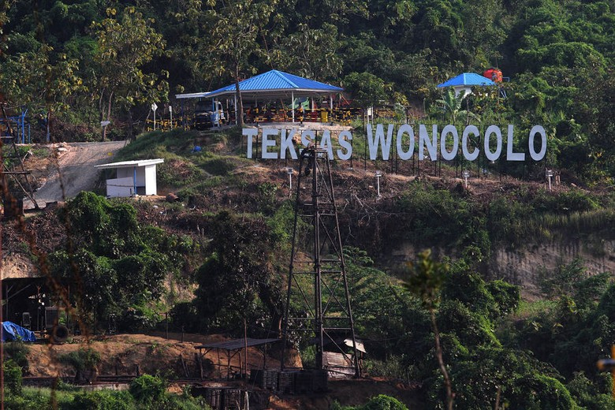
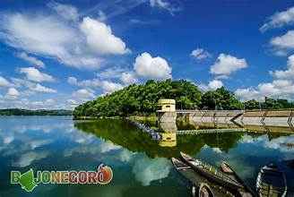
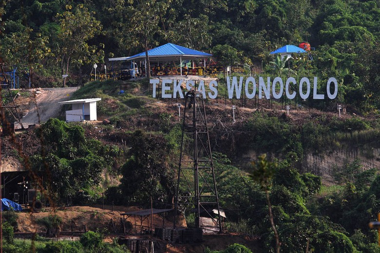
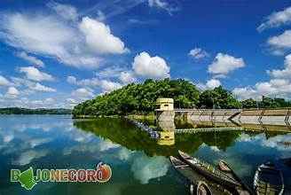

KHAYANGAN API: API ABADI PENUH LEGENDA
Terletak di Desa Sendangharjo, Kecamatan Ngasem, Khayangan Api merupakan fenomena alam unik berupa api yang tidak pernah padam meski diguyur hujan deras. Situs ini memiliki nilai sejarah yang kuat, dikaitkan dengan era Kerajaan Majapahit dan tokoh legendaris Mbah Kriyo Kusumo. Selain menjadi objek wisata, Khayangan Api juga memiliki nilai budaya yang tinggi. Api abadi dari lokasi ini secara rutin diambil dalam rangkaian peringatan hari jadi Kabupaten Bojonegoro. Kisah tentang pembuatan pusaka, khususnya Keris Jangkung Luk Telu Blong Pok Gonjo, menambah daya tarik mistis lokasi ini.
TEXAS WONOCOLO: GEOPARK MINYAK BUMI YANG UNIK
Berlokasi di Desa Kedewan, Texas Wonocolo menawarkan pemandangan unik berupa sumur-sumur minyak peninggalan kolonial Belanda yang masih ditambang secara tradisional. Sebagai bagian dari Geopark Bojonegoro, lokasi ini menyimpan keistimewaan sebagai penghasil minyak terdangkal di dunia, dengan kedalaman reservoir hanya sekitar 100 meter di bawah permukaan tanah. Dengan 700 sumur minyak yang 200 di antaranya masih ditambang secara tradisional, Texas Wonocolo menjadi bukti sejarah industri perminyakan Indonesia. Lokasinya yang berjarak 60 km dari pusat kota menawarkan pengalaman edukasi yang menarik tentang proses penambangan minyak tradisional.WADUK PACAL: WARISAN KOLONIAL YANG MEMPESONA
Waduk Pacal di Desa Kedungsumber, Kecamatan Temayang, merupakan bukti sejarah peninggalan kolonial Belanda yang dibangun pada tahun 1933. Dengan tiket masuk yang sangat terjangkau, hanya Rp5.000, pengunjung dapat menikmati keindahan alam dan kesejukan udara di sekitar waduk. Meski usianya sudah hampir seabad, Waduk Pacal tetap menjadi primadona wisata air di Bojonegoro. Pepohonan rindang yang mengelilingi waduk menciptakan suasana yang sejuk dan nyaman, menjadikannya tempat favorit untuk menghabiskan waktu libur bersama keluarga, terutama pada akhir pekan dan hari libur. 


